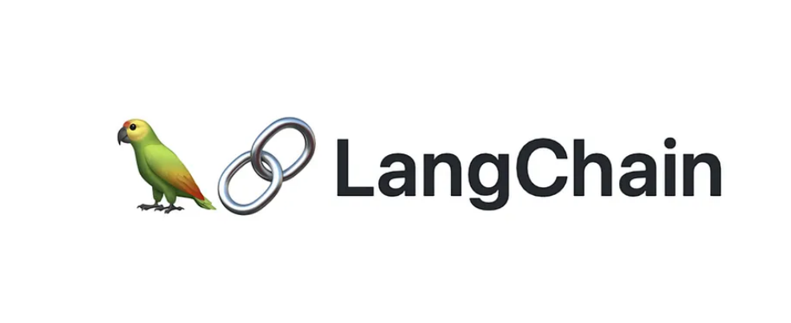

Generative AI - Langchain
What LangChain is, why people use it to build applications around language models, and where it came from.
What LangChain is, why people reach for it, and where it came from.

Calling a language model is easy. Building an application around one (prompts, several models, monitoring, deployment) is where the work piles up. That is the gap LangChain fills.
LangChain is a framework for developing applications powered by language models. It provides a set of tools and abstractions that make it easy to build applications that can generate text, translate languages, write different kinds of creative content, and answer questions in an informative way.
LangChain is designed to be flexible and extensible. It can be used with any language model, and it provides a variety of ways to interact with language models. For example, LangChain can be used to call language model APIs directly, or it can be used to build more complex applications that use multiple language models in combination.
LangChain is also designed to be scalable and production-ready. It provides a number of features that make it easy to deploy and manage language model applications in production, such as support for distributed computing and monitoring.
LangChain was initially released in October 2022, by Harrison Chase, under MIT licences
Table of Content
- Generative AI - Langchain
- Table of Content